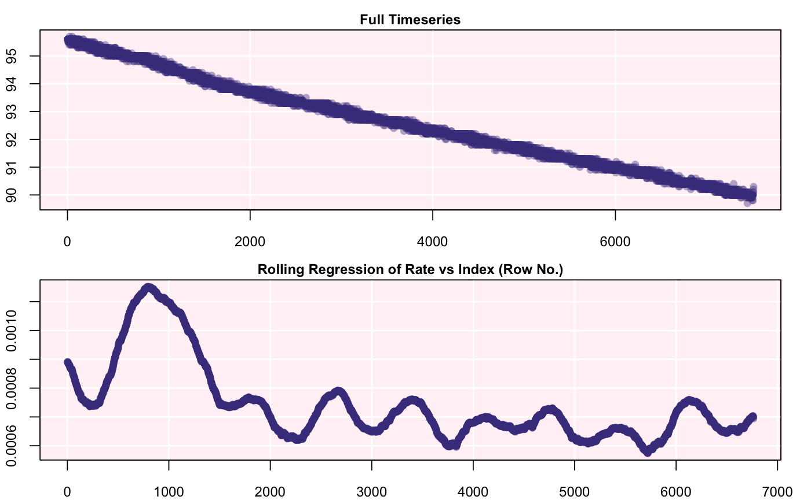
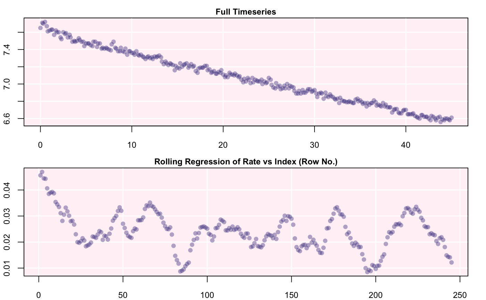
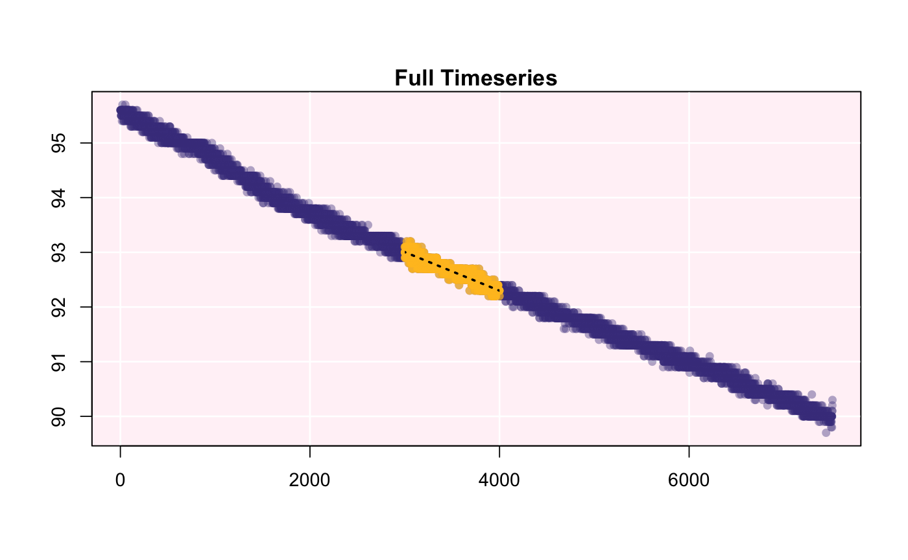

inspect_data() scans a data frame for specific errors that may affect the
use of functions in respR. Data checks include: * A test for NA/NaN inputs.
A test for numeric data. * A test for sequential time data. * A test for duplicate time data. * A test for evenly-spaced time data.
inspect_data(df, xcol = 1, ycol = 2, highlight = TRUE, plot = TRUE)
| df | data frame. Accepts data frame object of any size. |
|---|---|
| xcol | numeric. Defaults to |
| ycol | numaric. Defaults to |
| highlight | logical. Defaults to TRUE. Prints location (row #) of errors detected by the function. |
| plot | logical. Defaults to TRUE. Produces plots for quick visual diagnostics. |
A list object of class adjust_rate.
Once data checks are complete, the function produces a list object which may
be directly loaded into calc_rate(), calc_rate.bg(), auto_rate() and
pcrit() for further analyses.
inspect_data(sardine.rd)#> Warning: Time column (xcol) is of class `integer' and has been converted to `numeric`.#> Oxygen : num [1:7513] 95.6 95.6 95.6 95.6 95.6 95.6 95.6 95.5 95.5 95.5 ... #> Time : num [1:7513] 0 1 2 3 4 5 6 7 8 9 ... #> --- #> Score #> No NA/NaN in Time (xcol) PASS #> No NA/NaN in O2 (ycol) PASS #> Sequential Time (xcol) PASS #> Non-duplicated Time PASS #> Evenly-spaced Time PASS #> ---#>inspect_data(urchins.rd, 1, 5, highlight = FALSE)#> Warning: Time data (xcol) is irregular. Subsetting by `row` may result in irregular durations.#># It is also possible to load the function directly into respR's # other functions: calc_rate(inspect_data(sardine.rd, highlight = FALSE, plot = FALSE), from = 3000, to = 4000, by = "time")#> Warning: Time column (xcol) is of class `integer' and has been converted to `numeric`.#>#> Rate(s): #> [1] -0.0007059132